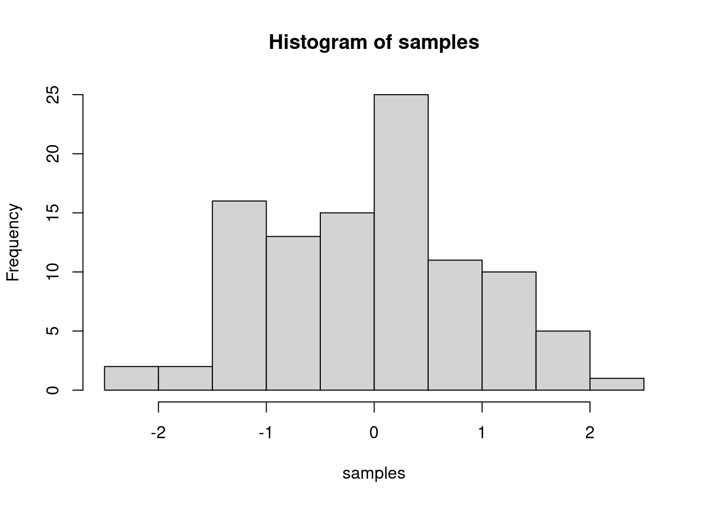

03 Automated Machine Learning with H20
Ahmad Nadeem Saigol
2020-11-05
1 Part 1
1.1 Loading Libraries
library(GGally)1.2 Loading Data
employee_attrition_tbl <- read_csv("new_raw_data/Business Decisions with Machine Learning/datasets-1067-1925-WA_Fn-UseC_-HR-Employee-Attrition.csv")1.3 Plotting Helper Functions
plot_ggpairs <- function(data, color = NULL, density_alpha = 0.5) {
color_expr <- enquo(color)
if (rlang::quo_is_null(color_expr)) {
g <- data %>%
ggpairs(lower = "blank")
} else {
color_name <- quo_name(color_expr)
g <- data %>%
ggpairs(mapping = aes_string(color = color_name),
lower = "blank", legend = 1,
diag = list(continuous = wrap("densityDiag",
alpha = density_alpha))) +
theme(legend.position = "bottom")
}
return(g)
}1.4 Plots for Answering Questions
employee_attrition_tbl %>%
select(Attrition, contains("income"), contains("salary"), contains("stock")) %>%
plot_ggpairs(Attrition)
employee_attrition_tbl %>%
select(Attrition, contains("satisfaction")) %>%
plot_ggpairs(Attrition)
employee_attrition_tbl %>%
select(Attrition, contains("life"), contains("involvement"), contains("overtime")) %>%
plot_ggpairs(Attrition)
employee_attrition_tbl %>%
select(Attrition, contains("years")) %>%
plot_ggpairs(Attrition) ## Questions
## Questions
1. What can you deduce about the interaction between Monthly Income and Attrition?
- Those that are leaving the company have a higher Monthly Income
- That those are staying have a lower Monthly Income
- Those that are leaving have a lower Monthly Income
- It’s difficult to deduce anything based on the visualization
2. What can you deduce about the interaction between Percent Salary Hike and Attrition?
- Those that are leaving the company have a higher Percent Salary Hike
- Those that are staying have a lower Percent Salary Hike
- Those that are leaving have lower Percent Salary Hike
- It’s difficult to deduce anything based on the visualization
3. What can you deduce about the interaction between Stock Option Level and Attrition?
- Those that are leaving the company have a higher stock option level
- Those that are staying have a higher stock option level
- It’s difficult to deduce anything based on the visualization
4. What can you deduce about the interaction between Environment Satisfaction and Attrition?
a.A higher proportion of those leaving have a low environment satisfaction level b. A higher proportion of those leaving have a high environment satisfaction level c. It’s difficult to deduce anything based on the visualization
5. What can you deduce about the interaction between Work Life Balance and Attrition a. Those that are leaving have higher density of 2’s and 3’s b. Those that are staying have a higher density of 2’s and 3’s c. Those that are staying have a lower density of 2’s and 3’s d. It’s difficult to deduce anything based on the visualization
6. What Can you deduce about the interaction between Job Involvement and Attrition?
a.Those that are leaving have a lower density of 3’s and 4’s b. Those that are leaving have a lower density of 1’s and 2’s c. Those that are staying have a lower density of 2’s and 3’s d. It’s difficult to deduce anything based on the visualization
7. What can you deduce about the interaction between Over Time and Attrition?
- The proportion of those leaving that are working Over Time are high compared to those that are not leaving
- The proportion of those staying that are working Over Time are high compared to those that are not staying
8. What can you deduce about the interaction between Training Times Last Year and Attrition?
- People that leave tend to have more annual training
- People that leave tend to have less annual training
- It’s difficult to deduce anything based on the visualization
9. What can you deduce about the interaction between Years At Company and Attrition? a. People that leave tend to have more working years at the company b. People that leave tend to have less working years at the company c. It’s difficult to deduce anything based on the visualization
10. What can you deduce about the interaction between Years Since Last Promotion and Attrition?
- Those that are leaving have more years since last promotion than those that are staying
- Those that are leaving have fewer years since last promotion than those that are staying
- It’s difficult to deduce anything based on the visualization
2 Part 2
2.1 Loading Libraries
samples <- rnorm(100, mean=0, sd=1)
hist(samples)